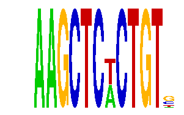

family_14 |
|---|
|  |
| Download PWM |
| Download instances (motifs) |
| Show motif distribution |
Query_ID | Query_Consensus | Subject_Name | Source_DB | Subject_ID | Length | Orientation | Offset | Divergence | Overlap | Subject_Consensus |
|---|---|---|---|---|---|---|---|---|---|---|
| family_14 | AAGCTCTCTGTN | CATRRAGC | JASPAR | PF0134 | 8 | as given | -4 | 0.862 | 4 | CATGGAGC |
Sequence | Start_position (from start) | Start_position (from end) | Average conservation | Best conservation score | Instance_with_best_CS | Best_Z-score | Instance_with_best_ZS | Strand |
|---|---|---|---|---|---|---|---|---|
| chr14:63881391-63882391 | 449 | 461 | 0.860333 | 1 | AAGCTCWCTGT. | 18.51029 | AAGCTCNCTGT. | -1 |
| chr2:172302664-172303664 | 970 | 982 | 0.00225 | 0.004 | AAGCTCWCTGT. | 16.767979 | AAGCTCWCTGTS | 1 |
| chr6:87381026-87382026 | 413 | 425 | 0.00316667 | 0.007 | AAGCTCNCTGT. | 18.51029 | AAGCTCWCYGT. | -1 |
| chr18:4994219-4995219 | 979 | 991 | 0.752667 | 0.994 | AAGCTCWCTGTS | 18.51029 | AAGCTCNCTGT. | 1 |
| chr2:4310148-4311148 | 389 | 401 | 0.00391667 | 0.022 | AAGCTCWCTGT. | 18.51029 | AAGCTCNCTGT. | 1 |
| chr10:92768916-92769916 | 98 | 110 | 0.260333 | 0.627 | AAGCTCNCTGT. | 16.767979 | AAGCTCWCTGTS | 1 |
| chr1:23278058-23279058 | 146 | 158 | 0.77325 | 0.841 | AAGCTCWCTGTS | 18.51029 | AAGCTCWCYGT. | 1 |
| chr5:113324787-113325787 | 985 | 997 | 0.0198333 | 0.03 | AAGCTCWCTGTS | 18.51029 | AAGCTCNCTGT. | -1 |
| chr1:77493050-77494050 | 129 | 141 | 0.221167 | 0.633 | AAGCTCWCTGTS | 18.51029 | AAGCTCNCTGT. | 1 |
| chr10:30557934-30559899 | 1412 | 1424 | 0.99625 | 1 | AAGCTCWCTGTS | 18.51029 | AAGCTCNCTGT. | 1 |
| chr8:71406075-71407075 | 393 | 405 | 0.00166667 | 0.01 | AAGCTCNCTGT. | 18.51029 | AAGCTCWCTGT. | -1 |
| chr16:50516509-50517509 | 85 | 97 | 0.003 | 0.008 | AAGCTCWCTGT. | 16.767979 | AAGCTCWCTGTS | 1 |
| chr15:90859129-90860129 | 171 | 183 | 0.00375 | 0.019 | AAGCTCWCTGTS | 18.51029 | AAGCTCWCTGT. | 1 |
| chr16:18587578-18588578 | 914 | 926 | 0.00125 | 0.003 | AAGCTCWCYGT. | 16.767979 | AAGCTCWCTGTS | 1 |